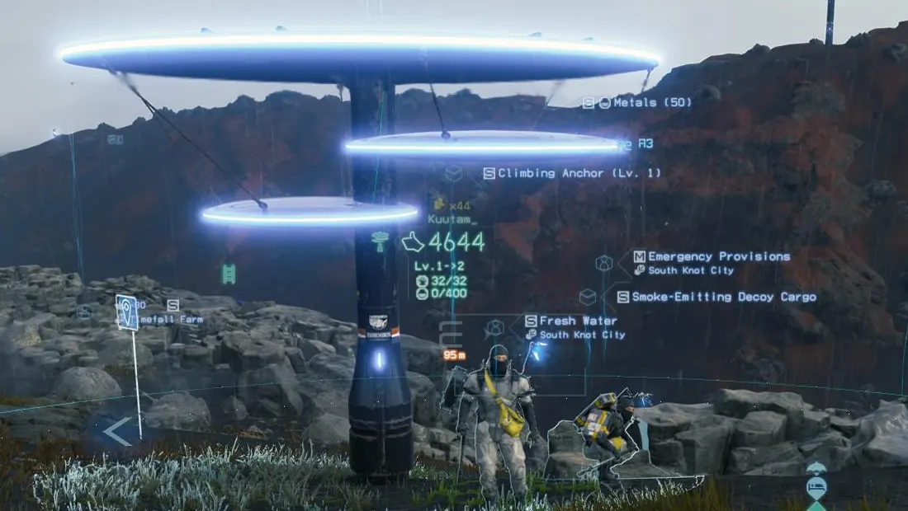
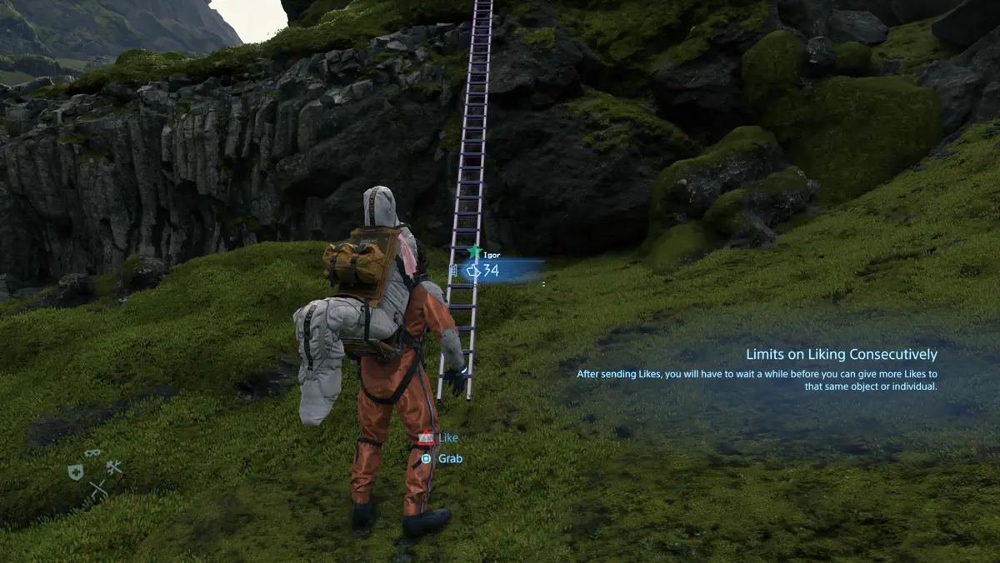
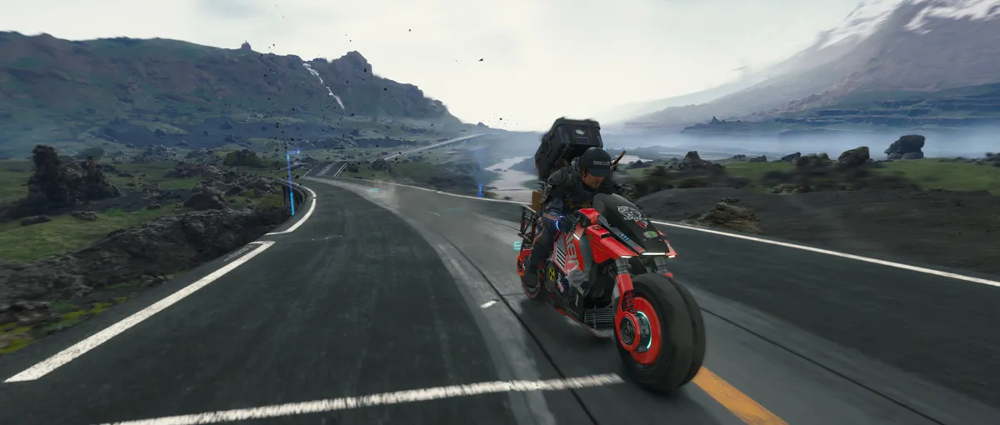
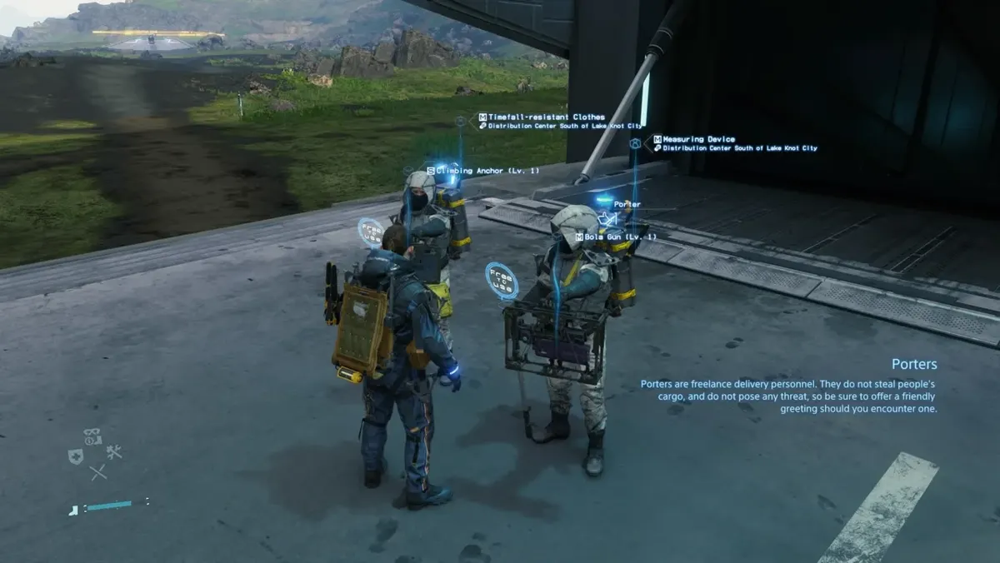
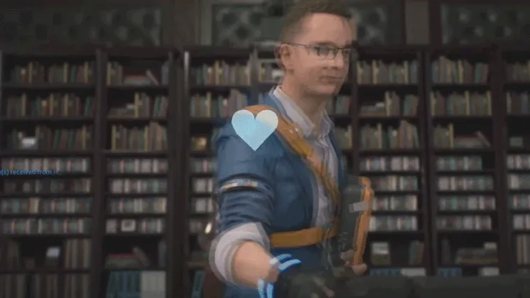

내가 기억하는 좋아요
지금까지 시간이 나는 대로 최대한 다양한 게임을 경험해 보려 하고 있지만, 그 수많은 게임 중에서도 인생 게임을 하나 꼽아 보라 하면 데스 스트랜딩은 빠지지 않는 게임이라고 생각한다. 게임을 한 지도 어느덧 3년 가까이 되어 자세한 디테일은 잘 생각나지 않지만, 이 게임이 주었던 감동은 아직까지도 느껴지는 것 같다.
이 게임이 가지는 가장 큰 특징은 솔로 플레이임에도 다른 플레이어의 도움을 받을 수 있다는 점이다.

남이 놓아 둔 사다리
세상 곳곳으로 배송을 다니다 보면 다른 플레이어가 남기고 간 도구나 흔적들이 보이는데, 지친 상태로 험지를 걷다 시의적절하게 남겨진 사다리를 만나면 그토록 기쁠 수가 없다. 플레이어들은 서로의 구조물에 좋아요를 원하는 만큼 남길 수 있는데, 나는 그런 사다리나 쉼터를 보면 좋아요를 한도까지 다다닥 눌러 주곤 했다. 특별한 보상을 바라고 누른 건 아니었다. 진심으로 고마워서, 게임 속 상황에 몰입해 있었기 때문에 나온 행동이었다고 생각한다.

내가 이은 국도
작은 구조물 말고 게임 안에서 큰 역할을 하는 국도도 서로 도움을 주며 수리할 수 있는데, 여기에 많이 기여하면 그곳을 지나는 유저들의 좋아요를 자동으로 받을 수 있다. 국도를 잇는 데는 매우 많은 자원과 수고가 드는데도, 좋아요가 쌓이는 게 좋아서 자원을 모으는 대로 수리에 쏟아붓던 기억이 난다.

NPC의 좋아요
이 게임에서는 플레이어뿐만 아니라 NPC들도 좋아요를 준다. 외진 곳에서 홀로 사는 NPC에게 소중한 물건을 배송해 주면 고맙다는 말과 함께 답례로 좋아요도 주는데, 사실 현실에서는 아무런 의미도 가치도 없는 데이터 쪼가리인 좋아요지만 나는 그 좋아요에도 큰 보람을 느끼며 서브퀘스트 하나하나를 다 챙겼던 것 같다.
평소에 최대한 모든 서브퀘스트를 다 챙기려는 성향도 있지만, 좋아요 시스템이 없었다면 내가 이렇게까지 열정적으로 동기 부여를 받으며 플레이하지는 않았을 것 같다.


우리가 원래 지닌 가치는 미묘하지만, 제도는 그 가치를 단순하게 줄여서 내민다.
우리가 그것을 내 것으로 받아들일 때 가치 포획이 일어난다.Value capture occurs when our natural values are subtle, but institutions present us with simplified versions of those values, and then we internalize them.
사다리에 누른 좋아요는 진심으로 고마워서 누른 것이었다.
NPC의 의뢰를 하나하나 챙긴 데에는 좋아요를 받는 보람이 컸다.
좋아요가 없었다면, 나는 NPC들의 의뢰를 무시했을까?
내가 의뢰를 하나하나 챙긴 건 NPC를 돕고 싶어서였을까, 좋아요를 받고 싶어서였을까?